MEN5CH/B0JE ÜBER BORD
81
Der Ruf »Mensch über Bord« besagt auf See, dass sich jemand in unmittelbarer Lebensgefahr befindet. Umjede Verwechslung mit dem Ernstfall auszuschließen, wird das schulmäßige Üben dieses Ernstfalls als Boje-über-Bord-Manöver bezeichnet.
Ist aber wirklich jemand über Bord gefallen, ist das auf einer leicht und schnell manövrierfähigen Jolle nicht allzu problematisch. Boot und Schwimmer bleiben in Sichtkontakt. Es wird kaum viel mehr Zeit als eine Minute vergehen, und das Boot ist wieder bei ihm. Anders sieht es auf einer (größeren) Kielyacht aus, die mehr Raum und Zeit für ihre Manöver benötigt.
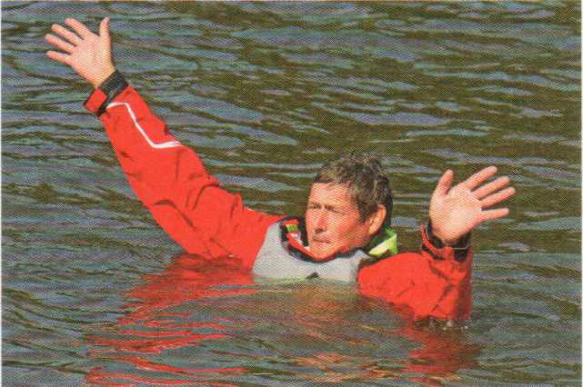
Beim Ruf »Mensch über Bord« sofort
► abfallen
► Rettungsboje mit Leine nachwerfen,
► ein Crewmitglied bestimmen, das nichts weiter zu tun hat, als den über Bord Gefallenen im Auge zu behalten.
Das Mensch-über-Bord-Manöver ist eines der wenigen Segelmanöver, bei denen es katastrophale Folgen haben kann, wenn man sie nicht sicher beherrscht. Wenn beispielsweise ein An- oder Ablegemanöver mal nicht so richtig klappt, so zeugt dies zwar von mangelnder Seemannschaft, istaberim Vergleich mit einem misslungenen Mensch-über-Bord-Manöver verzeihlich. Deshalb kann dieses Manöver gar nicht oft genug als Boje-über-Bord-Manöver geübt werden. Insbesondere unter erschwerenden Wind- und Seegangsverhältnissen.
Nach dem Ruf »Mensch/Boje über Bord!« gilt es, mit dem Boot auf schnellstem Wege innerhalb kürzester Zeit zum Ausgangspunkt zurückzukehren und dort das Boot zum Stehen zu bringen. Versuche mit verschiedenen Bootsklassen haben gezeigt, dass das Nahezu-in-den-Wind-Schießen die beste Methode ist, bereits nach wenigem Üben das Boot an einem gewünschten Punkt zum Stehen zu bringen.
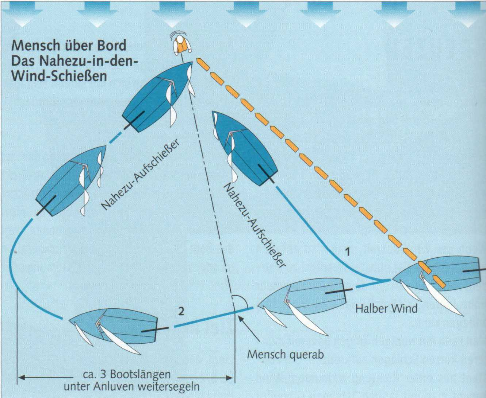
Es gibt zwei Versionen des Nahezu-Auf-schießens. Grundsätzlich sollte man das direkte, schnellere Manöver (1) fahren. Allerdings gilt es dabei, den richtigen Zeitpunkt zum Aufschießen zu erkennen.
► Anluven zum Nahezu-Aufschießer, wenn sich Mann oder Boje etwa in Verlängerung des Großbaums befindet. Das sind etwa drei Bootslängen, bevor man den Mann querab hat.
► Nur wenn der richtige Zeitpunkt verpasst wurde: auf dem anliegenden Halb-Wind-Kurs weitersegeln (Manöver 2). Befindet sich Mensch / Boje querab, noch etwa drei Bootslängen unter leichtem Anlu-
ven weiterlaufen, wenden und auf dem anderen Bug den Nahezu-Aufschießer fahren. Weiterlaufen und wenden bedeuten natürlich immer einen Zeitverlust.
► Der Vorteil des Nahezu-Aufschießers: Durch kurzes Holen und Fieren der Schoten lässt sich der Auslauf des Bootes beeinflussen (beim Direkt-Aufschießer nicht).
Meistens wird es bei hartem Wind geschehen, dass jemand außenbords geht. Eine Situation also, in der Halsen zu riskant sein kann. Zumal noch allgemeine Nervosität und die um den über Bord Gefallenen geschwächte Crew einkalkuliert werden müssen. Deshalb sind schulmäßige Rettungsmanöver folgendermaßen zu fahren:
|
Kommandotafel Mensch über Bord |
|---|
|
Boje (Mensch) über Bord an Stb/Bb! Boje (Mensch) über Bord an Stb/Bb! Fier auf die Schoten auf raumen Wind! Klar zur Q-Wende! Ist klar! Ree! Über die Segel! Fier auf die Schoten auf halben Wind! Los die Schoten! Boje (Mensch) ist gefasst! |
► Ausgangskurs am Wind bis halber Wind -sofort auf Kurs raumer Wind gehen, dann Q-Wende, wieder Halbwind-Kurs bis zum Nahezu-Aufschießer.
► Ausgangskurs raumer Wind bis vor dem Wind - entweder auf Raumwind-Kurs bleiben beziehungsweise vom Vor-dem-Wind-Kurs aus anluven auf raumer Wind, dann Q-Wende, wieder Halbwind-Kurs bis zum Nahezu-Aufschießer.
Anschließend sollte sich der über Bord Gefallene auf der Luvseite des Bootes befinden.
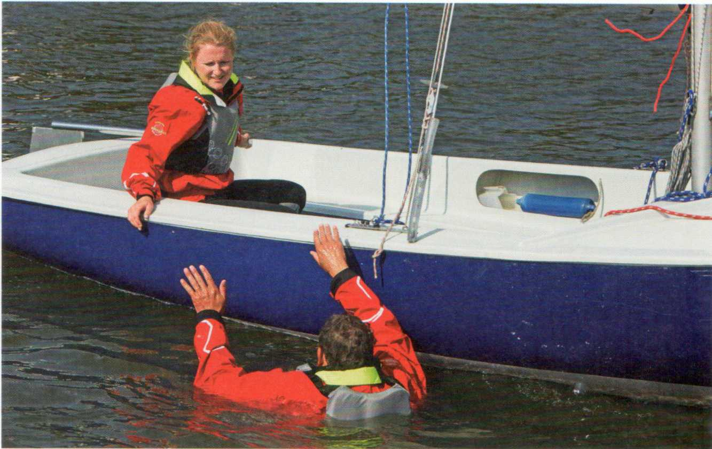
Das Boot soll so zum Stehen gebracht werden, dass sich Mensch (oder Boje) etwa in Höhe der Wanten oder des Cockpits befindet. Es gibt nämlich einen entscheidenden Unterschied zwischen dem schulmäßigen Boje-über-Bord-Manöver und dem realistischen Mensch-über-Bord-Manöver, auch auf Jollen. Schulmäßig wird das Manöver zu zweit gefahren. In der Segelpraxis jedoch muss meistens einer allein zurechtkommen, denn seine »zweite Hand« ist ja außenbords gegangen. Er hat neben Pinne und Großschot also auch noch die Fockschoten zu bedienen. Das macht deutlich, wie wichtig es ist, das Boot nicht vor, sondern neben der »Boje« zum Stehen zu bringen. Andernfalls müsste sich der »Einhandsegler« nach vorne begeben, Ruder und Schoten verlassen und könnte während der Bergung keinen Einfluss mehrauf die weiteren Bewegungen des Bootes nehmen.
|
Typische Anfängerfehler |
|---|
|
Schoten haken (Großschotklemme ist selbsttätig
eingerastet, Kinken vor der Leitöse in der Vorschot): Das Boot »segelt« mit zu viel Fahrt an
der Boje vorbei. Falscher Abstand von der Boje. Kein Nahezu-Aufschießer. |
Auf einer Jolle ist das An-Bord-Nehmen im Allgemeinen ziemlich unkompliziert. Man zieht den Betroffenen über das Heck ins Cockpit. Eine Achterleine oder auch die Schot mögen ihm hilfreich sein. Übernehmen an der Seite in Lee ist kaum möglich. Die Jolle könnte dabei kentern, außerdem behindern Segel und Großschot.
Auf Kielyachten wird es problematischer. Hier beginnen die eigentlichen Schwierigkeiten jetzt erst. Aufnehmen kann man nur über die Seite. Am besten wahrscheinlich in Lee, weil die Freibordhöhe dort etwas geringer ist, denn der Winddruck auf Rumpf und Rigg übt stets eine leichte Krängung nach Lee aus.
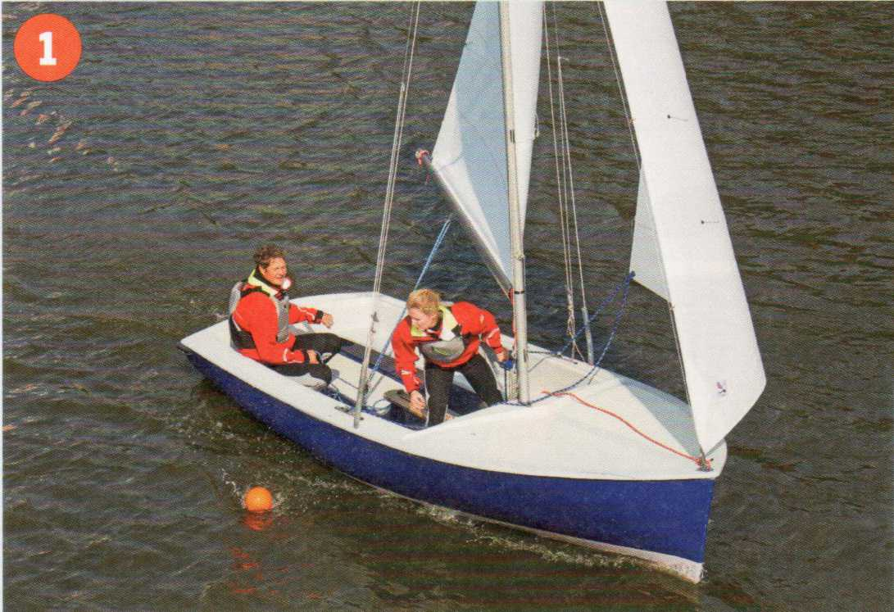
1 Boje über Bord an Steuerbord!
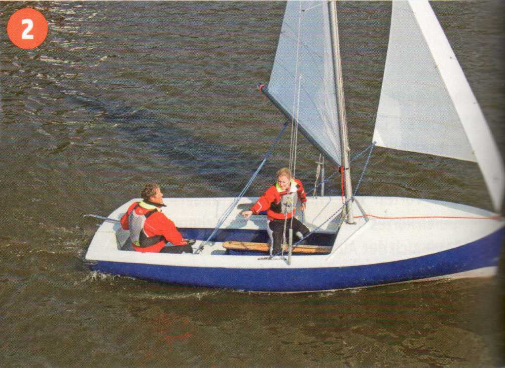
2 Schnelles Abfallen auf raumen Wind, Boje beobachten!
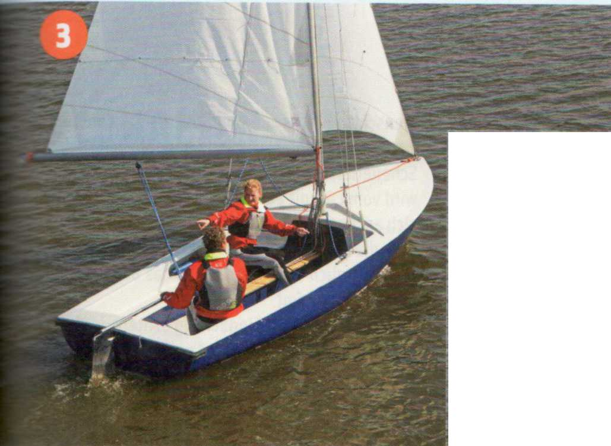
3 Drei Bootslängen segeln...
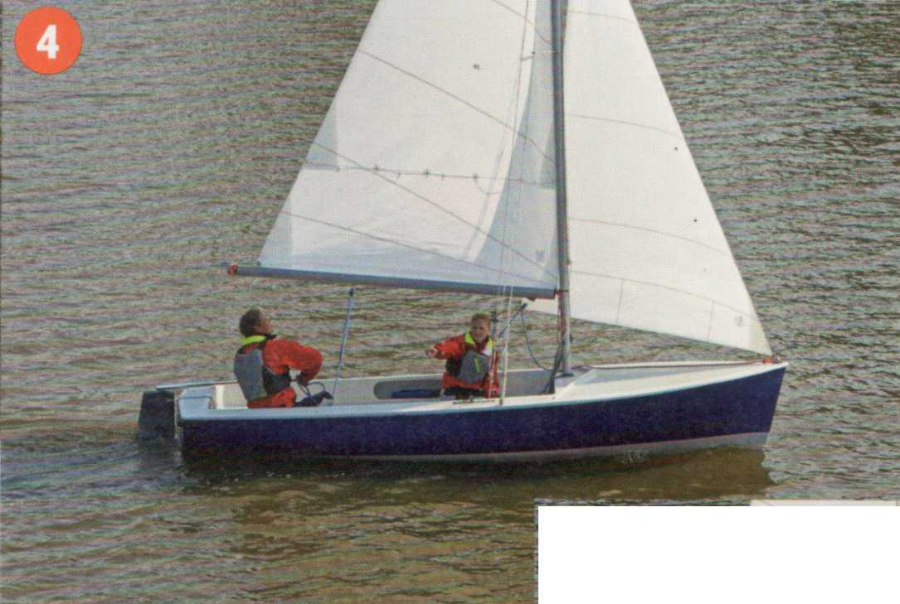
4 ... und die Q-Wende einleiten.
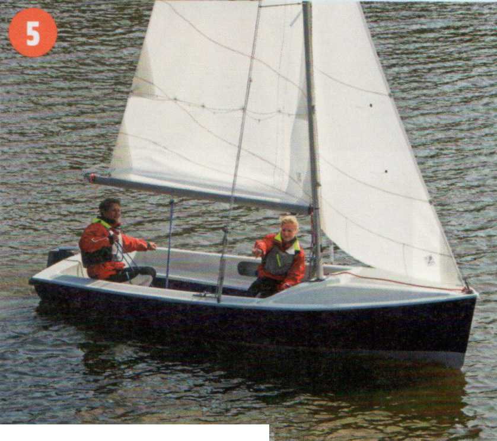
5 Über die Segel und sofortiges Abfallen ...
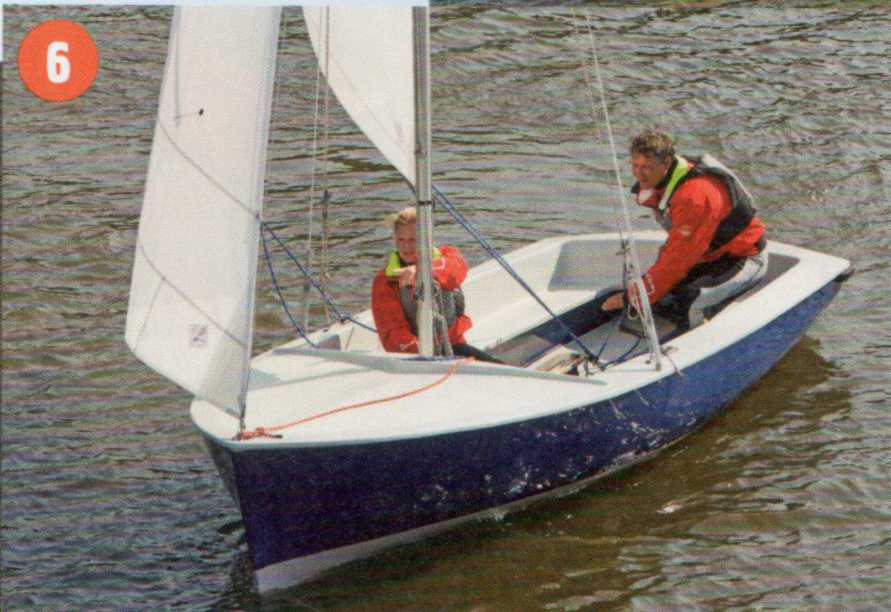
6 ... auf Halbwind-Kurs.
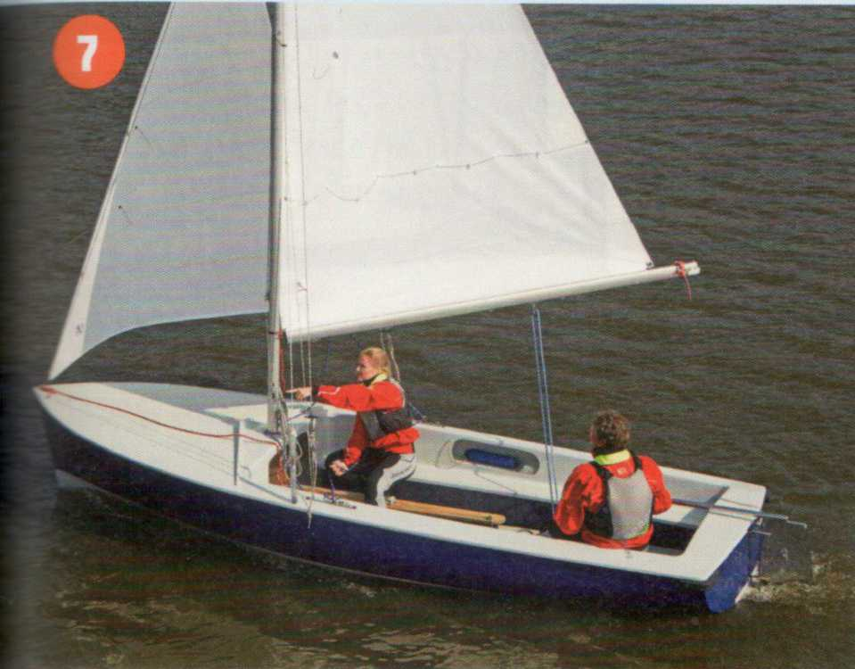
7 Wenn die Baumpeilung steht und die Boje in Verlängerung des Baumes liegt...
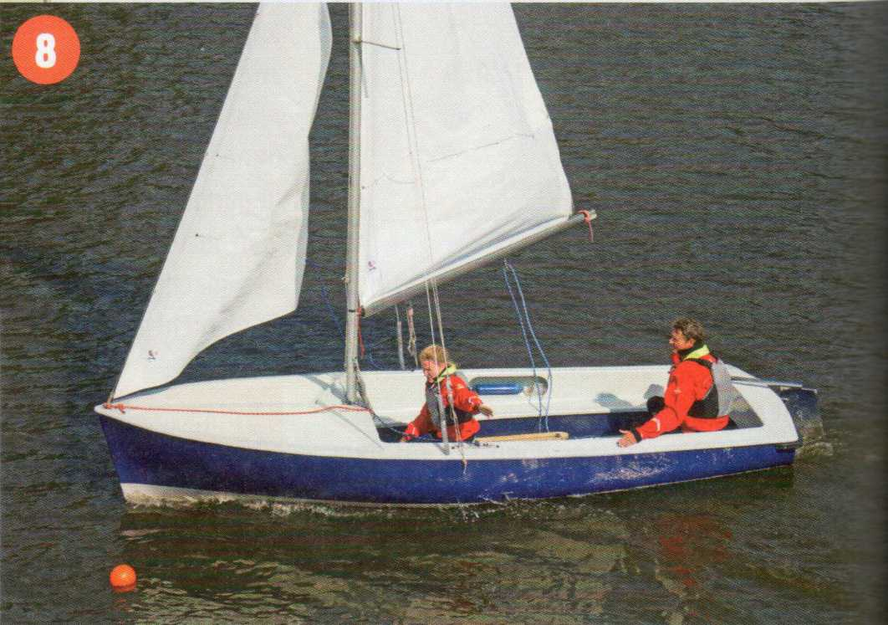
8 ... Schoten loswerfen, den Nahezu-Aufschießer einleiten und mit Minimalfahrt unter Anweisung des Vorschoters die Boje ansteuern.
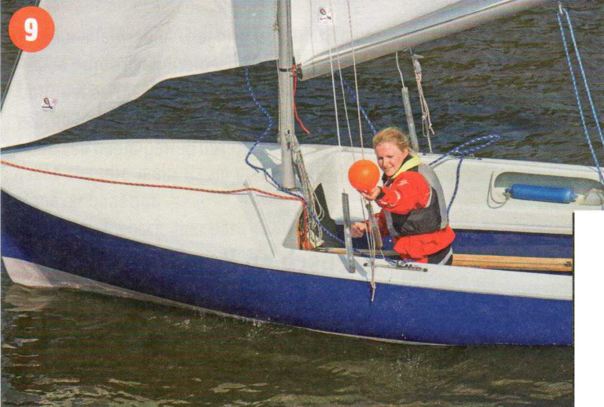
9 Aufnehmen der Boje in Luv.
Mensch an Bord - auf einer Jolle im Allgemeinen ziemlich unproblematisch. Er hangelt sich an der Scheuerleiste von Höhe Wanten zum Heck oder wird vom Cockpit aus dorthin gezogen und hievt sich am Cockpitsüll aufs Achterdeck. Achtgeben, dass die Schoten nirgends haken, damit die Segel nicht plötzlich Wind fangen und das Boot in einer Bö Fahrt aufnimmt.
Auf einer Jolle ohne Eindeckung achtern wird man vielleicht einen Fußgurt greifen können, um sich über den Spiegel zu ziehen und ins Cockpit zu wälzen. Wenn die Kleidung richtig voll Wasser gesogen ist, kann der Einstieg doch recht beschwerlich werden.
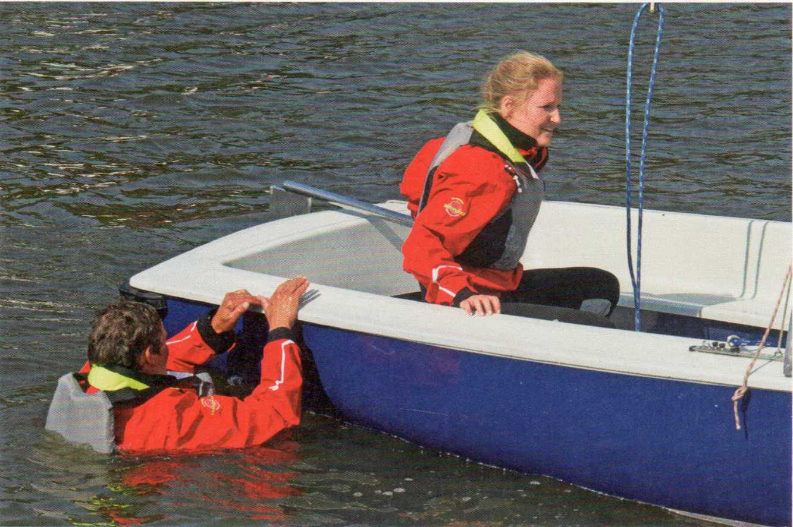
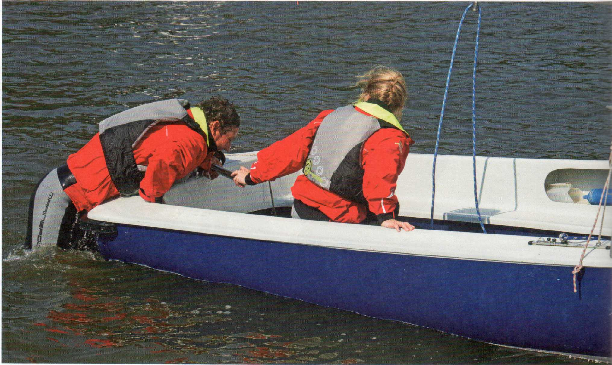